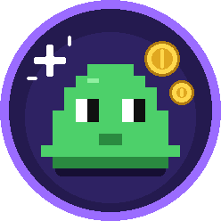
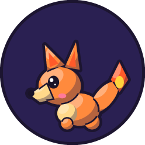
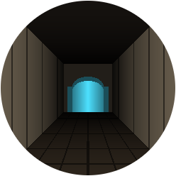
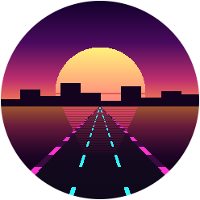
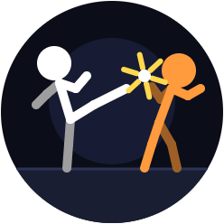
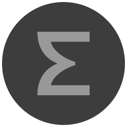
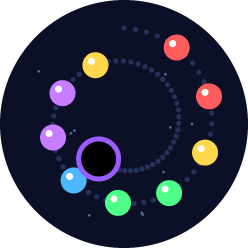
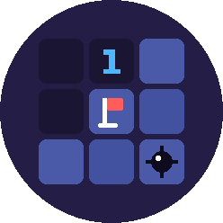

Bip 6 Watch Games
Eight original games for the Amazfit Bip 6 smartwatch (Zepp OS, 390×450 touch screen), written in JavaScript by Tudor Marian-Vlad.
These browser builds fake the watch APIs so you can play on a computer: the mouse is your finger, and the panel beside the watch lists swipe and tilt controls. Speed and feel are approximate.

Tap Quest
Idle clicker RPG: tap the monster, hire heroes, earn gold even while away.
Play →
Wristlings
Catch, feed and battle creatures powered by your steps and sleep.
Play →
Depth Crawl
First-person roguelite: fight down endless torchlit floors.
Play →
Neon Horizon
Synthwave night racer on rain-slick neon roads.
Play →
Stick Duel
Swipe to jab, kick, sweep and guard in stickman duels.
Play →
Tilt Arena
Tilt your wrist to survive waves of monsters.
Play →
Orbit Pop
Marble shooter: pop orbs before they reach the black hole.
Play →
Mine Patrol
Dig the field, flag the mines, beat your best time.
Play →